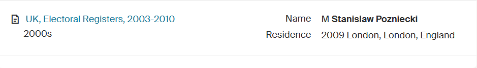

Crime - 2022-01-29: Stanislaw Pozniecki Assault Tube
London, UK
Crime London Stanislaw Pozniecki Sexual Predator Victim Support
Stanislaw Pozniecki was jailed for four years and nine months after sexually assaulting a 25-year-old woman on a London Underground train.
Source#Crime #London #Stanislaw Pozniecki #Sexual Predator #Victim Support
Thumbnail

People Involved
| Name | G | Nationality | Role | Age | Date of Birth | Offence(s) | Sentence |
|---|---|---|---|---|---|---|---|
| Stanislaw Pozniecki | 🌐 | Unknown | Offender | 49.0 |
Assault by Penetration
|
Four years and nine months imprisonment, 15-year Sexual Harm Prevention Order
|
Stanislaw Pozniecki was sentenced to four years and nine months in prison after sexually assaulting a 25-year-old woman on a London Underground train. The incident occurred on 2 January 2022, when Pozniecki targeted a lone female passenger, woke her, then sexually assaulted her before offering £20 for sex. The victim alerted rail staff, leading to his arrest. The court imposed a 15-year Sexual Harm Prevention Order, banning him from approaching women on public transport.

So what have the police failed to mention? Ah yes, he's a migrant to the UK Next why has it taken 4 years to get him into prison? What has he being doing in the last 4 years? Like, subscribe and share if you find this information useful.